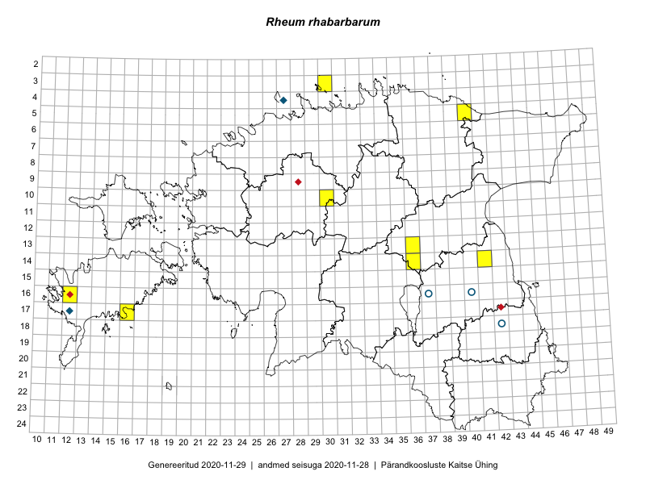

Rheum rhabarbarum
Uuendatud: 2016-12-01
Kaardile koondatud taksonid: Rheum rhabarbarum L.

Kaart põhineb 8 kirjel.
Viited andmebaasikirjetele
- Ott Luuk, Peedu Saar: 2015-06-21: 14-41: GPS punkt
- Toivo Sepp, Eerik Leibak: 2015-05-13: 14-36: ala
- Toivo Sepp, Eerik Leibak: 2015-05-13: 14-36: GPS punkt
- Toivo Sepp, Eerik Leibak: 2015-05-13: 13-36: ala
- Toivo Sepp, Eerik Leibak: 2015-05-13: 13-36: GPS punkt
- Toivo Sepp: 2015-05-29: 10-30: GPS punkt
- Tiit Hallikma, Ott Luuk: 2016-05-20: 05-40: GPS punkt
- Mari Reitalu, Triin Reitalu: 2016-07-01: 16-12: GPS punkt